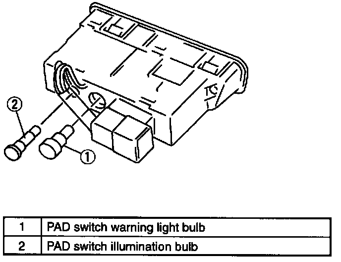

Operation CHARM
: Car repair manuals for everyone.
Home
>>
Mazda
>>
1999
>>
MX-5 Miata L4-1.8L DOHC
>>
Repair and Diagnosis
>>
Restraints and Safety Systems
>>
Sensors and Switches - Restraints and Safety Systems
>>
Air Bag Deactivation Switch
>>
Service and Repair
>>
PAD Switch Warning Light Bulb and Illumination Bulb
PAD Switch Warning Light Bulb and Illumination Bulb

1.
Disconnect the negative battery cable.
2.
Remove the center panel.
3.
Remove in the order indicated in the table.
4.
Install in the reverse order of removal.